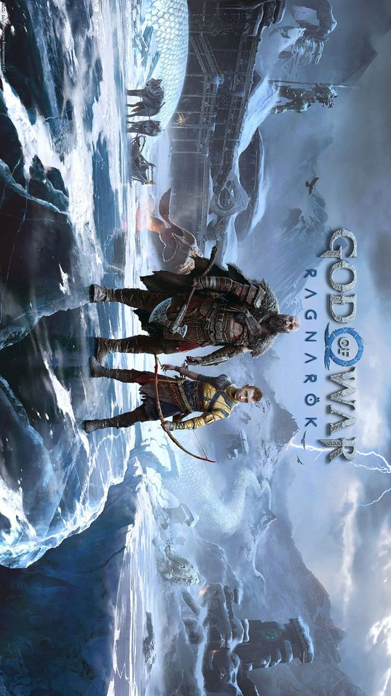

Games
O jogo eletrônico, videojogo ou videogame é aquele que usa a tecnologia de computador. Ele pode ser jogado em computadores pessoais (dentre eles tablets e telefones celulares), em máquinas de fliperama ou em consoles. Um console é um computador pequeno que serve basicamente para jogar videogame — PlayStation, Xbox e Wii são exemplos. Os consoles são conectados a controles manuais e a um aparelho de televisão. As pessoas podem jogar tanto sozinhas quanto acompanhadas
